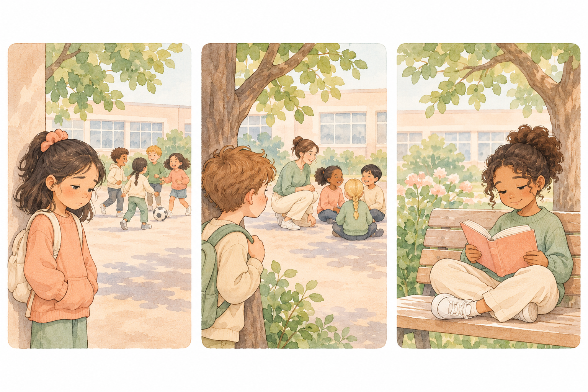
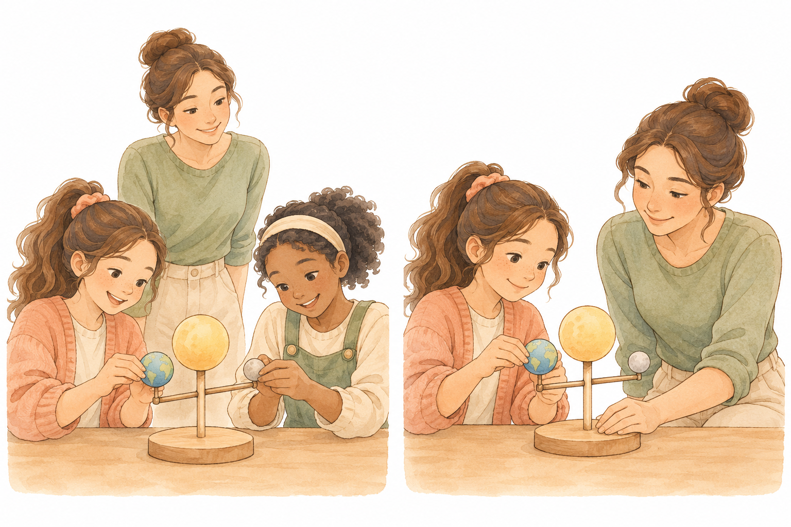
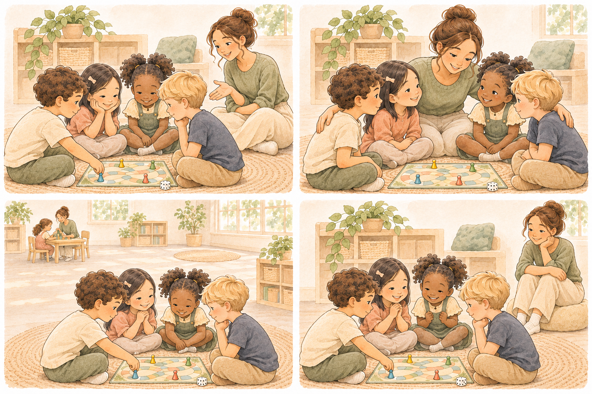
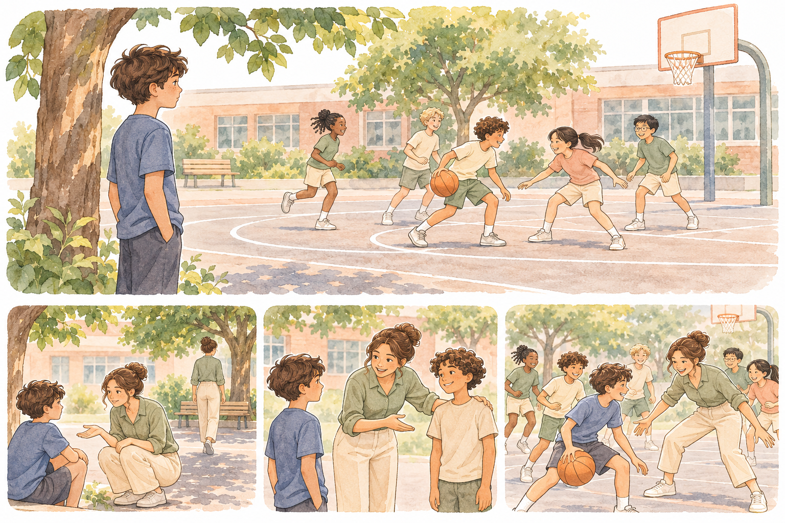
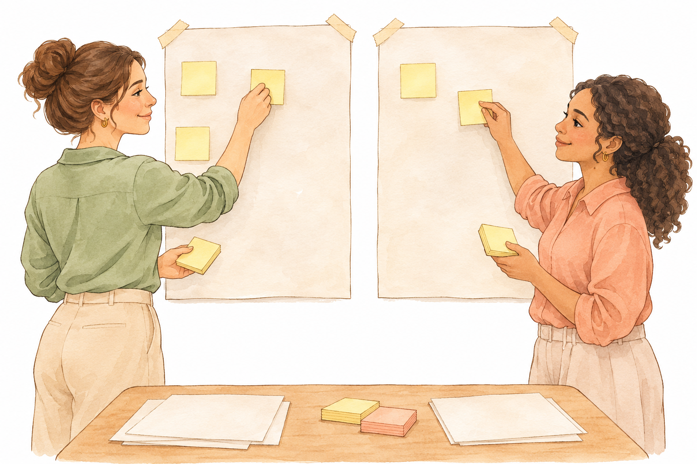

1 / 23 · 2 דקות · פתיחה · גשר מסוף ״מדרגות לעצמאות״
עצמאות בין חברים
איך עוזרים לילד להיכנס לקשר — ואז מתרחקים בלי שהוא נשאר לבד
במפגש הקודם בנינו מדרגות שבהן הילד עושה יותר לבד, והמבוגרת מתרחקת מהמשימה.
היום נשאל שאלה אחרת: כשהמבוגרת מתרחקת — האם יש מישהו אחר ליד הילד?

2 / 23 · 6 דקות · פתיחה · עבודה בזוגות
כשהיית צמודה — מה קרה בין הילדים?
ספרי לבת הזוג על רגע אחד מהשבוע שבו ילד היה לידך — בהפסקה, במעגל או במשימה משותפת — וחברים היו בקרבת מקום.
התמקדו בשאלה אחת: מה את עשית, ומה קרה בין הילדים?
כשהיית צמודה לילד, מה קרה בין הילדים?
סגירת הדיון
לרוב אנחנו זוכרות היטב מה עשינו ליד הילד, ופחות מה קרה בינו לבין חברים. היום נתבונן ברגע שביניהם.
3 / 23 · 4 דקות · פתיחה · מפת הגשר
שלושה חוטים ושאלת המפגש
מסוף ״מדרגות לעצמאות״ מגיעים היום שלושה חוטים. נגע בכל אחד במשפט, בלי לחזור על הכלים הישנים.
הילד מצליח, המבוגרת מתרחקת מהמשימה
השאלה החדשה: האם יש מישהו אחר לידו?
תפקיד אפשרי בקשר עם חברים
במפגש הקודם עלה שכשהילד כבר לא צריך אותנו במשימה, אפשר לבקש תפקיד אחר — למשל בקשר עם חברים. היום זה התפקיד.
גבול שכבר מכירות
סכנה ומצוקה מקבלים מענה תמיד. גם היום.
האם אפשר לעזור לילד להיכנס לחברים — ואז לצאת מהתמונה בלי שהוא נשאר לבד?
סגירת הדיון
(המרצה לא עונה עכשיו. השאלה נשארת פתוחה עד סוף השיעור.)
4 / 23 · 10 דקות · קטע א · מה קורה כשאני צמודה
נועם בחצר
נועם, בן 5, בגן. מקרה בדוי לתרגול.
בהפסקה בחצר הוא עומד ליד התומכת. שתי בנות בונות מגדל קוביות כמה מטרים ממנו.
התומכת מציעה: ״בוא נלך לבנות איתן.״ הוא מהנהן. היא מובילה אותו, יושבת ביניהן, בונה איתן ומדברת בשמו: ״נועם גם רוצה קובייה אדומה.״
הבנות עונות לה. אחרי חמש דקות נועם שקט. היא מסיימת את המגדל בשבילו.

מה נועם עשה בעצמו, ומה עשתה התומכת במקומו?
סגירת הדיון
כשהמבוגרת מדברת בשם הילד, יושבת בינו לבין החברים ומסיימת בשבילו — הילד נוכח, אבל הקשר קורה איתה, לא בינו לבין החברים.
5 / 23 · 8 דקות · קטע א · מה קורה כשאני צמודה
אותו רגע, אחרת
אותו נועם, יום אחר. מקרה בדוי להמשך התרגול.
התומכת נשארת שני צעדים מאחור. אומרת לנועם רק: ״אפשר לבקש קובייה.״
הוא אומר בשקט ״אדומה?״ אחת הבנות מושיטה.
התומכת מחייכת ועוברת לעזור לילד אחר בארגז החול, בטווח ראייה. אחרי דקה נועם עדיין שם.

מה השתנה במיקום של התומכת, ומה השתנה בין הילדים?
סגירת הדיון
כשהתומכת פינתה מקום, הבקשה וההעברה קרו בין הילדים. היא לא נעלמה — היא נשארה בטווח ראייה.
6 / 23 · 8 דקות · קטע א · מושג חדש 1
קרבה של מבוגרת שמצמצמת קשר
כשמבוגרת צמודה לילד לאורך זמן, קורה לפעמים דבר מוכר: חברים פונים אליה במקום אל הילד, והילד פונה אליה במקום אליהם.
זה לא אומר שהתומכת ״אשמה״. זו תופעה שתועדה כשסייעת נשארת קרובה מדי, בלי כוונה רעה.
גבול ברור: יש רגעים שבהם קרבה חיונית — בטיחות, מצוקה, תמיכה רפואית.
מתי קרבה מגינה, ומתי היא חוצצת?
סגירת הדיון
קרבה מגינה כשיש סיכון או מצוקה. היא עלולה לחצוץ כשהיא קבועה בלי צורך, והשיחה עוברת דרך המבוגרת במקום בין הילדים.
7 / 23 · 6 דקות · קטע א · הבחנה
שלושה מצבים שונים
לא כל ילד שנראה ״לבד״ זקוק לאותה תגובה. מבחינות קודם:

| מצב | מה רואים לעיתים קרובות | כיוון ראשון |
|---|---|---|
| בוחר להיות לבד | משחק או קריאה בשקט; נראה רגוע; מסרב בנימוס או לא נתקל בעוינות | מכבדות בחירה; בודקות מדי פעם אם משהו השתנה |
| רוצה קשר ומתקשה | מסתכל על החבורה; ניגש וחוזר; אומר ״אני לא יודע איך״ | תיווך קצר לכניסה, ואז פינוי מקום |
| נפגע | חרם, לעג, דחיפה, ״אל תשחקי איתו״, בכי אחרי הפסקה, דחייה חוזרת | מגינים ומעבירים למורה; לא ״מתווכות חברות״ במקום דיווח |
מה קורה אם מתייחסים לשלושת המצבים באותה דרך?
סגירת הדיון
אם כופים קשר על מי שבוחר להיות לבד — פוגעים בבחירה. אם רק ״מתווכות״ כשיש פגיעה — מפספסות הגנה. אם מתעלמות ממי שרוצה ומתקשה — מפספסות הזדמנות קטנה.
8 / 23 · 4 דקות · קטע א · כלל זהב
לא מאלצות קשר
״בוא לשחק איתם״ בכוח אינו תיווך.
כשיש פגיעה — מגינים ומעבירים למורה. לא מגייסות חברים ״שיתקנו״ את הסיטואציה.
כשילד בוחר להיות לבד ונראה רגוע — מכבדות.
תפקידנו: להגדיל הזדמנות לקשר ולהשתתפות — לא להבטיח חברות, ולא לכפות אותה.
סגירת הדיון
עצמאות בין חברים מתחילה בכבוד: לילד, לחברים, ולגבול שבין תיווך לבין הגנה.
9 / 23 · 10 דקות · קטע ב · תיווך בין ילדים
רננה במשימה משותפת
רננה, בת 9, כיתה ג׳ משלבת. מקרה בדוי לתרגול.
בשיעור מדעים הכיתה עובדת בזוגות על בניית דגם.
התומכת יושבת ליד רננה ומשמשת לה בת זוג: קוראת את ההוראות, מחזיקה את החלקים, מסבירה.
שותפה אפשרית ליד השולחן השני מסתכלת ולא ניגשת.
רננה מסיימת את הדגם — אבל לא דיברה עם אף ילד.

בסבב הראשון — מי היה ״החבר״ של רננה?
סגירת הדיון
כשהתומכת היא בת הזוג, המשימה מסתיימת — והקשר עם ילדים לא מתחיל. בסבב השני נפתח מקום לחברה.
10 / 23 · 10 דקות · קטע ב · מושג חדש 2
תיווך בין ילדים
במקום שהמבוגרת תהיה בת הזוג, היא עוזרת לילדים לעבוד או לשחק זה עם זה, ואז מצמצמת את עצמה.
זה לא ״לגייס חברים בשביל הילד״ בלי תיאום, ולא להפוך ילד אחר למטפל.
זה לתת הזדמנות טבעית, עם ליווי קצר.
לפי סקירות מקצועיות מוכרות, תמיכת עמיתים ותיווך בין ילדים הם כיוון עבודה מבוסס — במיוחד כשהמבוגרת מארגנת הזדמנות ואז מפנה מקום. אנחנו לא מבטיחות חברות; אנחנו מגדילות השתתפות.
מה הופך חבר ל״מטפל״ בלי כוונה?
סגירת הדיון
חבר הופך למטפל כשמטילים עליו אחריות קבועה לשמור, להסביר או להחליף מבוגרת. תיווך טוב מבקש שותפות קצרה והדדית, בתיאום.
11 / 23 · 8 דקות · קטע ב · מושג חדש 3
שייכות
ילדים זקוקים להרגיש שהם חלק מקבוצה — לא רק ״נוכחים ליד״.
שייכות נבנית ממעשים קטנים חוזרים: שם שנאמר, תור במשחק, תפקיד משותף קטן, מישהו שמחכה.
לא מכלים שייכות ביום אחד.
חיבור קצר למפגש הקודם: שם בנינו ״אני מסוגל״. כאן מוסיפים ״אני שייך״.
מה סימן קטן שילד מרגיש שהוא שייך — לא רק שהוא נמצא?
סגירת הדיון
נוכחות היא להיות בחצר. שייכות היא שיש לך תור, שם, תפקיד, או מישהו שמחכה לך בלי שמבוגרת מחזיקה את הקשר.
12 / 23 · 6 דקות · קטע ב · הכלי המרכזי
ארבעה תפקידים בקשר
זה הכלי של היום. זה לא סולם רמזים ולא מדרגות פעולה. זה מסלול של תפקיד בין ילדים.
מחברת

אומרת משפט קצר לילד ו/או לחבר; עומדת קרוב רק לרגע הפתיחה; מטרה: שידברו זה עם זה.
מאמנת מהצד
שני צעדים מאחור; מזכירה משפט אחד אם נתקעו; לא נכנסת לשיחה.
צופה קרוב
בטווח ראייה ושמיעה; לא מתערבת אם הקשר רץ.
זמינה מרחוק
עסוקה בילד אחר / בפינה אחרת; זמינה אם קוראים או אם יש מצוקה.
באיזה תפקיד אתן נמצאות הכי הרבה היום — ולמה?
סגירת הדיון
עוברים תפקיד כשיש סימן שאפשר לראות: דיברו זה עם זה, העבירו חפץ, שמרו על תור. אם יש מצוקה או פגיעה — לא ״עולים״; חוזרים להגנה.
13 / 23 · 3 דקות · קטע ב · סיכום לפני הפסקה
ילד אחד, תפקיד אחד
בחרו בראש ילד אחד מהעבודה שלכן (בלי שם בקול).
באיזה תפקיד הייתן מתחילות מחר — בהפסקה או במשימה משותפת: מחברת, מאמנת מהצד, צופה קרוב, או זמינה מרחוק?
מה הסימן הקטן שתראו כדי לעבור תפקיד אחד קדימה?
14 / 23 · 10 דקות · קטע ג · תרגול תיווך
איתי במשחק כדור
איתי, בן 11, כיתה ה׳. מקרה בדוי לתרגול.
בהפסקה הגדולה ילדים משחקים כדורסל. איתי עומד בצד. התומכת רוצה לעזור לו להיכנס.
שלוש אפשרויות:
- א. היא נכנסת למשחק איתו.
- ב. היא מבקשת מילד אחד: "תזמין אותו."
- ג. היא שואלת את איתי מה הוא רוצה. אם הוא רוצה — עוזרת לו לבקש תור או תפקיד קטן (למשל לשמור על הניקוד), ואז נסוגה לצל.

איזו אפשרות בונה קשר בין ילדים, ואיזו שמה את התומכת במרכז?
סגירת הדיון
אפשרות ג׳ שמה את הבחירה אצל איתי ואת הקשר בין הילדים. א׳ שמה את התומכת במרכז. ב׳ עלולה לגייס חבר בלי הסכמה ולהפוך אותו לשליח.
15 / 23 · 10 דקות · קטע ג · תרגול
תרגול: שני רגעים, ארבעה תפקידים
שני מקרים בדויים. לכל אחד ממלאות כרטיס תפקיד.
מה הסימן שהגיע הזמן לעבור מתפקיד לתפקיד?
סגירת הדיון
הסימן הוא מעשה בין ילדים שאפשר לראות — לא תחושה. אם אין מעשה, נשארות או יורדות תפקיד; לא כופות.
16 / 23 · 8 דקות · קטע ג · מקרה גבול
מתי לא מתרחקים
סתיו, בת 8. מקרה בדוי — מקרה גבול.
בשבועיים האחרונים שלוש בנות אומרות בכניסה לחצר: "אנחנו לא משחקות איתה."
סתיו בוכה בהפסקה ואומרת: "אף אחת לא רוצה."
התומכת חושבת: אולי לתווך כניסה למשחק?

מתי "תיווך" הופך להתעלמות מפגיעה?
סגירת הדיון
כשממשיכים לגייס חברים במקום להגן ולדווח, התיווך מכסה על הפגיעה. קודם בטיחות ודיווח; אחר כך, אם בכלל, תכנון עם המורה.
17 / 23 · 8 דקות · קטע ג · גבולות
גבולות ברורים
חרם / בריונות / אלימות → מגינים, מתעדים בקצרה, מעבירים למורה או לצוות. לא מגייסות חברים "שיתקנו".
ילד שבוחר להיות לבד ונדחה בלי עוינות → מכבדות בחירה; בודקות מדי פעם אם משהו השתנה.
גיוס חברים לתוכנית קבועה → רק בתיאום עם המורה, ועם ההורים כשצריך. חבר אינו מטפל.
סודות של ילדים על פגיעה → לא נשארים אצל התומכת.
מה לא בידיים שלי בסיפור חברתי?
סגירת הדיון
לא בידיים שלנו: אבחון, טיפול בחרם לבד, הבטחת חברות, ותוכנית חברתית כיתתית בלי מורה.
18 / 23 · 6 דקות · קטע ג · שפה
משפטים שעובדים, משפטים שחוסמים
חוסמים: "אני אשחק איתך." · "תשחקו איתו, הוא לבד המסכן." · "לכו כבר לשחק."
עובדים: "רוצה לבקש להצטרף, או לשחק ליד?" · "אפשר לשאול אם יש מקום לעוד אחד?" · "אני כאן אם תצטרך — נסה אתה."
איזה משפט משאיר את הקשר בין הילדים, ואיזה שם אותך באמצע?
סגירת הדיון
משפט טוב קצר, נותן בחירה, לא מרחם בקול, ולא שם את התומכת כבת הזוג.
19 / 23 · 16 דקות · קטע ד · דף כלי קבוצתי
תוכנית תיווך לרגע אחד
עובדות בקבוצות לפי דף העבודה. בדף יש הסבר, דוגמה מלאה (נועם) וטבלה ריקה.
בוחרות רגע אחד: הפסקה / מעגל / משימה משותפת / משחק בחצר — לא "כל היום".
אם המצב הוא "נפגע" — ממלאות רק את חלק הדיווח, בלי לבנות תיווך חברות.
בנק מקרים קצרים (בדויים; למי שאין רגע מהשבוע)
אורי, בן 6, גן: עומד ליד הגדר בכל החצר; מסתכל על משחק הכדור ולא ניגש.
הילה, בת 10: במשימת קבוצה שותקת; התומכת עונה במקומה כשהמורה שואלת את הקבוצה.
אדל, בת 7: אומרת "אני רוצה לבד" ויושבת עם ספר; נראית רגועה; ילדים לא מציקים.
רון, בן 12: אחרי שהתומכת התרחקה, שני ילדים לועגים לו בתור למים.
איזה חלק בתוכנית הוא שלך, ואיזה צריך תיאום?
סגירת הדיון
המשפטים והמיקום הם לרוב בידיים שלכן. תוכנית קבועה, גיוס חבר קבוע, וטיפול בפגיעה — לא.
20 / 23 · 8 דקות · קטע ד · שיתוף
גלריה קצרה
הדפים נתלים או מונחים על השולחנות.
כל קבוצה עוברת ליד דף אחד של קבוצה אחרת ומשאירה פתק אחד.

מה ראיתן אצל קבוצה אחרת שתיקחו?
סגירת הדיון
לומדים גם מתוכנית של אחרות: משפט חד, תפקיד התחלה מדויק, או גבול ששמו בזמן.
21 / 23 · 6 דקות · קטע ד · תיאום
משפט אחד למורה
מבנה: "ראיתי ש… בהפסקה/במשימה. אני מציעה לנסות תיווך קצר ואז לעמוד בצד. נבדוק עד… ונדבר ב…"
המטרה: לקבל אישור לניסוי קצר — לא לבקש אחריות על "למצוא חברים".
מה המורה צריכה לשמוע כדי להגיד כן — בלי שזה יישמע כמו "תשימי אותי אחראית על החברים"?
סגירת הדיון
המורה צריכה לשמוע תצפית קצרה, הצעה מוגבלת בזמן, ומועד בדיקה. לא הבטחה לחברות ולא האשמה.
22 / 23 · 5 דקות · קטע ד · יישום
פעולה אחת לשבוע
רגע אחד (הפסקה או משימה משותפת).
תפקיד אחד להתחיל בו.
סימן אחד: קרה קשר בלעדיי באמצע — כן / לא / חצי.
איזה רגע אחד תנסי השבוע, ובאיזה תפקיד תתחילי?
סגירת הדיון
שינוי קטן שחוזר עדיף על תוכנית גדולה שלא יוצאת לפועל.
23 / 23 · 3 דקות · קטע ד · סיום
מתי לחבר — ומתי לפנות מקום
חזרה קצרה לשאלת המפגש: האם אפשר לעזור לילד להיכנס לחברים — ואז לצאת מהתמונה בלי שהוא נשאר לבד?
התשובה של השיעור אינה קסם. היא תרגול: הבחנה בין מצבים, תפקיד מדויק, גבול ברור, ותיאום.
סגירת הדיון
עצמאות בין חברים נבנית כשהמבוגרת יודעת מתי לחבר — ומתי לפנות מקום.